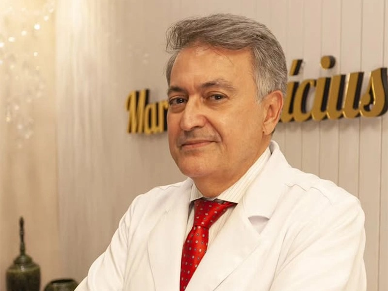
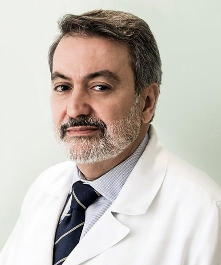
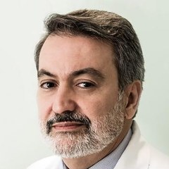
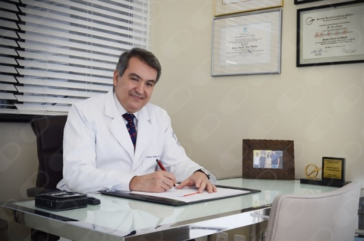

A sensibilidade dos mamilos pode mudar depois da cirurgia de ginecomastia?
“Olá, pode sim, embora na maioria das vezes seja preservada a sensibilidade.”
Ver na Doctoralia →Cirurgião plásticoCRM-BA 8601RQE 2730
Formado pela UFBA em 1986, o Dr. Marcus resume assim quase 40 anos de Medicina: “nem sempre a melhor conduta é operar. É preciso avaliar, orientar e cuidar.” Atende com hora marcada na Pituba e no Hospital São Rafael.
5,0 ★★★★★ no Google · 12 opiniões na Doctoralia

Por onde começar
Quatro caminhos para ler com calma antes da consulta. Onde há aspas, o texto é do próprio Dr. Marcus, com link para a fonte. A indicação é sempre individual, definida em consulta.
Redutora, mastopexia, prótese e ginecomastia: o tema dos trabalhos que ele publicou.
Cirurgia das mamasAbdomeAbdominoplastia, lipoaspiração, lipoabdominoplastia e a diástase.
Contorno corporalPerda de pesoBraços, coxas, dorso e abdome: “não existe uma cirurgia padrão para todos”.
Excesso de peleFaceLifting facial e frontal, pálpebras, nariz e orelhas.
FaceFormação de cirurgiões
A trajetória do Dr. Marcus passa quase toda pelo Hospital São Rafael, em Salvador. As barras listradas vêm do currículo publicado por ele; as douradas e os losangos, de registros oficiais.
Formação de qualidade: lista de serviços credenciados
| Serviço | Regente | Cidade | UF |
|---|---|---|---|
| · · · | |||
| Serviço de Cirurgia Plástica do Hospital São Rafael | Marcus Vinicius Alfano Moscozo | Salvador | BA |
| · · · | |||
Na lista de serviços credenciados de 2025, publicada pela Sociedade Brasileira de Cirurgia Plástica na revista Plastiko's, o Serviço de Cirurgia Plástica do Hospital São Rafael aparece com o Dr. Marcus como regente. Segundo a revista, “atualmente, são mais de 80 serviços credenciados em todo o país”.
Foi no mesmo hospital que ele fez a residência em cirurgia plástica, de 1992 a 1994. Em 2011, a Revista Brasileira de Cirurgia Plástica o apresentava como “Coordenador do Serviço de Cirurgia Plástica e Residência Médica do Hospital São Rafael”. Hoje, coordena também a Câmara Técnica de Cirurgia Plástica do CREMEB.
“As técnicas evoluíram, a segurança ganhou ainda mais espaço e os resultados passaram a valorizar cada vez mais a naturalidade e a individualidade.”
Dr. Marcus, no Instagram, em 28/08/2026.
Formação, ensino e publicaçõesCirurgia das mamas na literatura
Um capítulo no livro Breast Surgery, da Springer, e dois artigos na Revista Brasileira de Cirurgia Plástica. Os links abrem as publicações originais.
Marcus Vinicius Alfano Moscozo e Rafael Andrade Alves. Peixoto's Technique for Reduction Mammoplasty. Em: J. Avelar (org.), Breast Surgery. Cham: Springer, 2026, p. 231–244.
O capítulo apresenta a técnica de mamoplastia redutora desenvolvida pelo cirurgião plástico Gerardo do Rego Peixoto.
Francisco Aníbal Passos de Brito e Marcus Vinicius Alfano Moscozo. Sutura circunferencial da mama com agulha de Brito-Moscozo: técnica alternativa para sutura dos pilares nas mamoplastias. Revista Brasileira de Cirurgia Plástica, v. 31, n. 1, jan.–mar. 2016.
Uma técnica alternativa para a sutura dos pilares da mama nas mamoplastias, com suturas circunferenciais feitas com a agulha que leva o sobrenome dos dois autores.
Francisco Marcelo de Oliveira Tavares, Cristina Maria Gomes Gil de Menezes, Marcus Vinícius Alfano Moscozo e outros. Retalho de omento: uma alternativa em cirurgia reparadora da parede torácica. Revista Brasileira de Cirurgia Plástica, v. 26, n. 2, jun. 2011.
Cirurgia reparadora da parede do tórax, em trabalho realizado no Hospital São Rafael.
Em 28/08/2026, o Dr. Marcus foi moderador de uma mesa-redonda na 39ª Jornada Norte-Nordeste de Cirurgia Plástica (programação oficial).
Cirurgia das mamas
Nas palavras dele
Porque, para mim, cuidar vai muito além do procedimento. É escutar, orientar, acolher e construir uma relação de confiança em cada etapa.
Dr. Marcus, no Instagram, em 08/09/2026.
Uma cirurgia plástica não deve ser escolhida para reproduzir a aparência de outra pessoa.Dr. Marcus, no Instagram, em 29/09/2026
Mas existe uma tendência que nunca sai de moda: respeitar o tempo, os limites e a individualidade de cada pessoa.Dr. Marcus, no Instagram, em 10/09/2026
Hoje, a cirurgia plástica é mais personalizada: cada indicação considera a anatomia, a saúde e as expectativas do paciente.Dr. Marcus, no Instagram, em 28/08/2026
O melhor tratamento é sempre aquele planejado de forma individualizada, com avaliação e indicação médica.Dr. Marcus, no Instagram, em 03/09/2026
Dr. Moscozo Responde!
“Depois de quase 40 anos de profissão, uma certeza permanece: nem sempre a melhor conduta é operar. É preciso avaliar, orientar e cuidar.” Dr. Marcus, no Instagram, em 28/08/2026. Abaixo, respostas que ele publicou na Doctoralia; as perguntas foram resumidas.

“Toda cirurgia plástica começa com dúvidas e informação de qualidade também faz parte do cuidado.”
Ver o post de 24/09/2026 →A sensibilidade dos mamilos pode mudar depois da cirurgia de ginecomastia?
“Olá, pode sim, embora na maioria das vezes seja preservada a sensibilidade.”
Ver na Doctoralia →Tenho diástase de 5 cm. Dá para corrigir sem fazer abdominoplastia?
“Se não deseja uma cicatriz vertical, então só com a abdominoplastia.”
Ver na Doctoralia →Tenho prótese de silicone no dorso do nariz. Posso fazer rinomodelação?
“Com o tempo há reabsorção osteocartilaginosa com o silicone, por isso melhor reoperar, a despeito de ser possível a rinomodelação.”
Ver na Doctoralia →O queloide da orelha voltou, mesmo depois dos tratamentos. O que fazer?
“Pelo descrito, já houve aplicação dos tratamentos disponíveis. Por ser uma predisposição genética, é de difícil solução. Converse com seu médico e veja a possibilidade de compressão.”
Ver na Doctoralia →A cirurgia das mamas supranumerárias nas axilas mexe no músculo?
“Não há ação sobre músculo, somente sobre a glândula e gordura.”
Ver na Doctoralia →Ficou uma fibrose no dedo depois de uma lesão grave na falange. Tem tratamento?
“Só é possível definir examinando.”
Ver na Doctoralia →Avaliações
Médico maravilhoso, atencioso, consultório organizado, equipe competente e atenciosa. Desde a primeira consulta até a revisão atendimento de primeira.
Objetivo, empático, respondeu todas as minhas dúvidas de forma muito satisfatória.
Excelente consulta. Profissional pontual, tirou todas as minhas dúvidas e foi bastante atencioso.
Profissional incrível e atencioso. Sempre pensando no bem estar do paciente.
Estar nas mãos, sob os cuidados, de um profissional super experiente, consciente, atencioso faz toda diferença.
Dr Marcus é o tipo de médico que cativa pela dedicação e o profissionalismo.
Excelente atendimento! Passa muita paz e confiança.
Pontual, excelente profissional. […] Ótima equipe e um excelente médico.
[…] muito atencioso e humano.
Excelente profissional.
Médico cauteloso.
Trechos de avaliações públicas do Google (três fichas, todas com nota 5,0) e da Doctoralia, com nome abreviado e a data informada por cada plataforma.
Conteúdos
Legendas recentes do perfil @dr.marcusmoscozo, com o link de cada post e a página do site sobre o mesmo tema.
“No fim, mais importante do que seguir um padrão é buscar segurança, harmonia e naturalidade.”
“Toda cirurgia plástica começa com dúvidas e informação de qualidade também faz parte do cuidado.”
A cirurgia “pode ser uma possibilidade após uma avaliação individualizada”.
“[…] existe uma tendência que nunca sai de moda: respeitar o tempo, os limites e a individualidade de cada pessoa.”
“Cuidar vai muito além do procedimento.”
“Não existe uma cirurgia padrão para todos.”
“O rejuvenescimento facial não precisa significar transformar quem você é.”
“Nem sempre a melhor conduta é operar.”
Onde atende
Atendimento com hora marcada. Os horários não são publicados: combine dia, horário e local pelo WhatsApp (71) 99118-1690.

Rua Altino Serbeto de Barros, 119, 1º andar, sala 107 · Pituba · Salvador – BA · CEP 41830-492
Av. São Rafael, 2152 · São Marcos · Salvador – BA · CEP 41253-190
Onde o Dr. Marcus é regente do Serviço de Cirurgia Plástica credenciado pela SBCP.
Endereços, mapa e o que levarDúvidas frequentes
No consultório do Centro Odonto Médico Linus Pauling (Rua Altino Serbeto de Barros, 119, 1º andar, sala 107, Pituba) e no Hospital São Rafael (Av. São Rafael, 2152, São Marcos). Veja endereços e mapa.
Pelo WhatsApp (71) 99118-1690. O atendimento é com hora marcada: combine dia, horário e local pela mensagem.
CRM-BA 8601 e RQE 2730, em Cirurgia Plástica. Na busca pública da Sociedade Brasileira de Cirurgia Plástica, ele aparece como membro titular.
Não necessariamente. Nas palavras dele: “nem sempre a melhor conduta é operar. É preciso avaliar, orientar e cuidar.” A indicação é individual, e a decisão é sua.
Sim. É autor do capítulo “Peixoto's Technique for Reduction Mammoplasty”, no livro Breast Surgery (Springer, 2026), e coautor do artigo sobre a sutura com a agulha de Brito-Moscozo (RBCP, 2016). Veja a página de cirurgia das mamas.
Na página Dr. Moscozo Responde, com as respostas públicas dele na Doctoralia e o link de cada uma.
Condições de atendimento e valores são informados pela equipe, pelo WhatsApp.
Agende
Atendimento com hora marcada no Centro Odonto Médico Linus Pauling, na Pituba, e no Hospital São Rafael. Combine dia, horário e local pelo WhatsApp (71) 99118-1690.